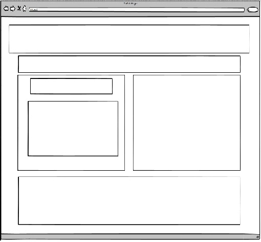
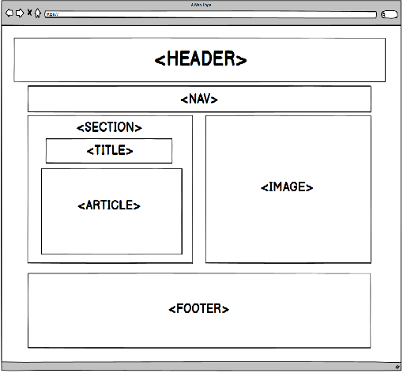

El propósito del sitio es dar a conocer a los nuevos diseñadores web la renovación de los diseños con la llegada del HTML5, ya que incorpora numerosas etiquetas que no se habían visto antes. Una de estas renovaciones son las etiquetas semánticas, en el presente artículos veremos con más claridad por que deben ser utilizadas para el mejoramiento del diseño web.
De igual manera daremos una revisión por CSS Grid, que ha sido una gran mejora al crear un sitio web ya que los diseños deben ser atractivos y se deben ver de forma intuitiva, por eso el estilo CSS reúne las herramientas para diseñar sitios con esas características teniendo en cuenta que es uno de los procesos más frustrantes del CSS, sobre todo para principiantes en el proceso de colocar y distribuir los elementos a lo largo de una página.
Etiquetas semanticas
El lenguaje HTML es una tecnología que se ha renovado con la llegada de HTML5, puesto que incorpora numerosas etiquetas que no se había visto en versiones anteriores del lenguaje de marcación que se puede clasificar en función de su utilidad o característica. En el presente párrafo revisaremos que son las etiquetas semánticas y el por que se recomiendan en el mejoramiento del diseño web.
¿Que son las Etiquetas semanticas?
La real academia de la letra define semántica como “perteneciente o relativo a la significación de las palabras”, así se entiende es te tipo de lenguaje HTML: aquellas que dan un significado a las partes que componen un documento.
Si identificamos los importantes cambios ya existentes como < inpunt/ > y la eliminación de otras como < xmp >, uno de los cambios mas importantes es la integración de nuevas etiquetas, algunas de estas tienen la misión de mejor la vida de los programadores y otras tienen misma característica de la etiqueta muy conocida < div >. Estas etiquetas implementan los estándares de la Web Semántica, lo que busca es generar contenido legible para todas las aplicaciones informáticas, uno de los usos más importantes de estas etiquetas es identificar la información de las pagina para que sea registrada por buscadores web como Google.
Estas son algunas etiquetas semánticas
< header >
Representa un grupo de ayudas introductorias o de navegación, también puede contener logos, formulario de búsqueda o tabla de contenidos.
< nav >
Sección de una página que enlaza a otras páginas o partes de la misma, una sección con links de navegación.
< aside >
Sección de una página que contiene contenido relacionado tangencialmente al de su alrededor, por lo general se utilizan como barras laterales.
< main >
Representa el contenido predominante de la página, una página debe tener solo un tag < main >. Solo debe estar contenida por tags de tipo < html >, < body >, < div > o < form >.
< article >
Representa una sección de contenido que puede ser distribuido de forma independiente,
puede ser un post en un foro, un artículo de periódico, una entrada de un blog, un comentario, etc.
< section >
Representa a una sección genérica de una página. Agrupa contenidos que tienen una relación temática entre sí.
< footer >
Representa un pie de página para el elemento que lo contiene, generalmente contiene información acerca de quién lo escribió, enlaces a documentos relacionados, datos de derechos de autor o similares.
CSS Grid
Definido como un sistema de rejillas para la maquetación web compatible con todos los navegadores en 2 dimensiones, creado dentro del lenguaje CSS. Esto quiere decir que no nada más para que el navegador lo entienda, una vez puesto en práctica se aplica el nuevo display: grid y a partir de ahí se puede empezar a utilizar estas robustas propiedades y valores CSS. Con estos simples pasos se podrá controlar cualquier aspecto que se quiera dar al diseño web en cuanto a rejillas se habla obteniendo todo de una manera más cómoda.
El modelo de maquetación en rejillas CSS es algo que no podría sonar como novedoso esto teniendo en cuenta que distintas librerías de CSS lo habían tratado de implementar, sistemas como 960 grid system fue uno de los pioneros en diseñar un código base para que los diseñadores posicionarán los elementos en una distribución de filas y columnas.
¿Qué es CSS Grid?
Cuando hablamos de CCS Grid entendemos que trabaja directamente con las ultimas versiones de navegadores ya que ofrecen soporte para CSS Grid, solo hay que acostumbrarse con la forma de trabajar de las rejillas y utilizar display: grid con el que se empieza a utilizar todas las características y organizar elementos dentro de la página web entre los cuales encontramos:
• Ofrece un control total de las dos dimensiones.
• La ubicación de los ítems es libre; no es una tabla.
• Es posible colocar los ítems donde necesitemos, en cualquiera de las celdas que el Grid describe, incluso en celdas que no has descrito.
• Puede haber ítems que se coloquen solos gracias al su característica de auto-placement.
• También podemos conseguir comportamientos similares con una cantidad de atributos novedosas, aunque con distintos matices que las diferencian.
Lo mejor de Grid Layout es que ofrece varias novedades a comparación con las existentes en CSS, mientras se va utilizando se apreciara muchas variantes de las cuales antes no se disponía para organizar elementos dentro de la pagina web, para resaltar de las novedades más importantes serian estas:
• Puedes colocar los ítems donde quieras, en cualquiera de las celdas que el grid describe, incluso en celdas que no has descrito.
• La posición de los elementos en la página puede ser totalmente distinta a cómo aparecen ordenados en el código HTML.
• Puede haber ítems que se coloquen solos (auto-placement).
• Controlas las dos dimensiones.
• La colocación de los ítems es libre, no es una tabla.
• Tiene una variada sintaxis y nuevas unidades, atributos y funciones que te ofrecen nuevas posibilidades.
• Ofrece una cantidad amplia de nuevos atributos CSS para los elementos de la página. A veces permiten conseguir comportamientos similares y hay que estar atento para entender los distintos matices que los diferencian.
Con estos cambios pude confundirse al empezar a utilizarlo, lo realmente importante es que va realizar una cambio completo el CSS, Una vez se tenga asimilado lo fácil que es hacer layouts complejos, no se volverá a las técnicas que usaban antes.
Mi MockUp
Muestra previa del diseño de la página web realizado en aplicación Balsamiq.


Aprendizaje
Con el desarrollo de esta actividad entramos en la revisión de dos temas de bastante importancia en el mundo del desarrollo web y que facilitan el proceso de construcción y organización de todos los elementos que conforman una página web.
Le damos una acentuada revisión a las etiquetas semánticas donde se explica la definición técnica y se identifican algunas de las Etiquetas utilizadas por los desarrolladores las cuales facilitan la ubicación de la información.
De igual manera se realiza la profundización en la definición de CSS Grid, donde identificamos el sistema de rejilla para la organización dentro del desarrollo, así mismo se analiza la compatibilidad entre navegadores para la inclusión de este sistema. Por último indicamos una a una las ventajas y novedades del CSS.